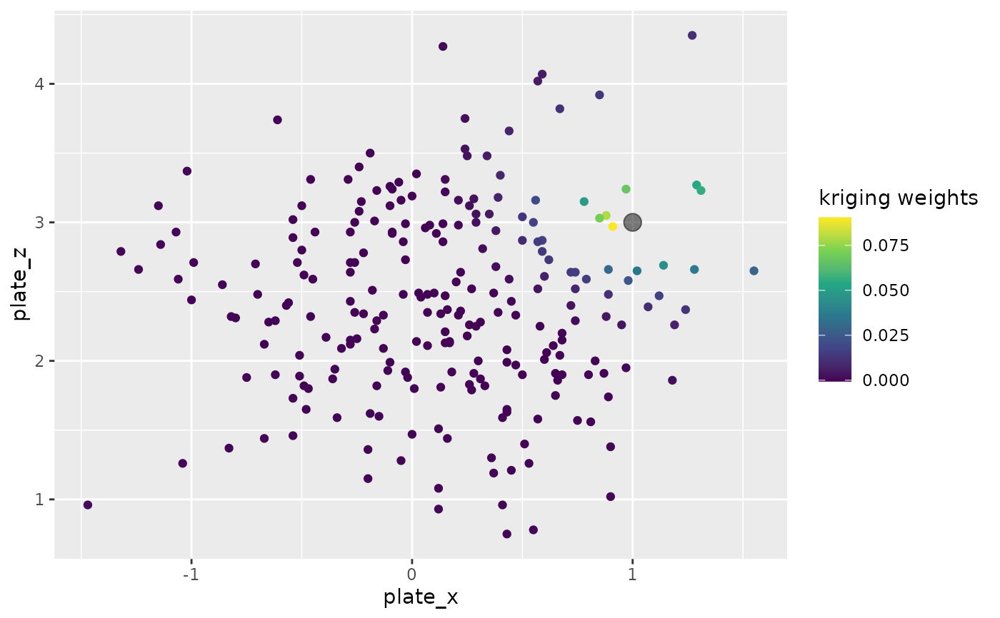
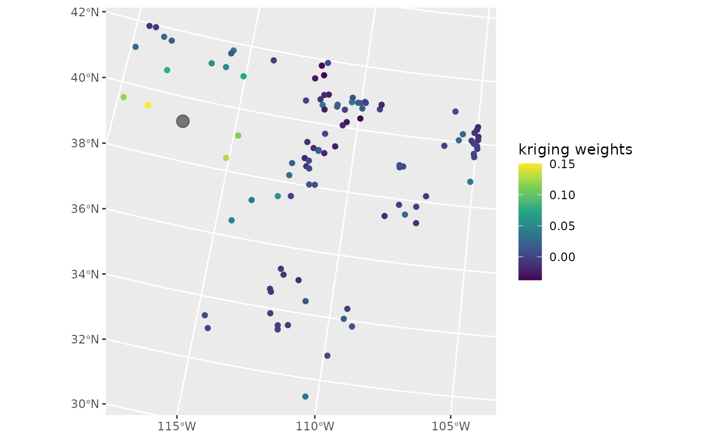

Plots kriging weights using a fitted model and a data set with locations
and predictors at which we would like to predict. Note that, if there are
categorical predictors in the model, then all levels must be present
in pred_data for the function to run.
Arguments
- model
is the fitted model object from
splm.- og_data
is the name of the data set used to fit the model.
- pred_data
is the data set that contains the locations and predictor values for which we would like to predict the response at.
- index
is the row number corresponding to the row in
pred_datafor which we would like to visualize the kriging weights.- type
can be either
"full"to plot the full kriging weights,"resid"to plot the residual/spatial contribution to the weights, or"mean"to plot the fixed effects/mean contribution to the weights.
Examples
library(tibble)
library(spmodel)
clement_hits_pred <- tibble(launch_speed = c(NA, NA, NA),
plate_x = c(-1, 0, 1),
plate_z = c(3, 3, 3))
launch_mod <- splm(launch_speed ~ 1,
data = clement_hits,
spcov_type = "exponential",
xcoord = plate_x,
ycoord = plate_z)
show_kwts(model = launch_mod, og_data = clement_hits,
pred_data = clement_hits_pred, index = 3)
#> Warning: `aes_string()` was deprecated in ggplot2 3.0.0.
#> ℹ Please use tidy evaluation idioms with `aes()`.
#> ℹ See also `vignette("ggplot2-in-packages")` for more information.
#> ℹ The deprecated feature was likely used in the spmodel.data package.
#> Please report the issue at <https://github.com/highamm/spmodel.data/issues>.

lake_mod <- splm(log_cond ~ temp + elev, data = lake, spcov_type = "gaussian")
show_kwts(model = lake_mod, og_data = lake,
pred_data = lake_preds, index = 4, type = "full")
